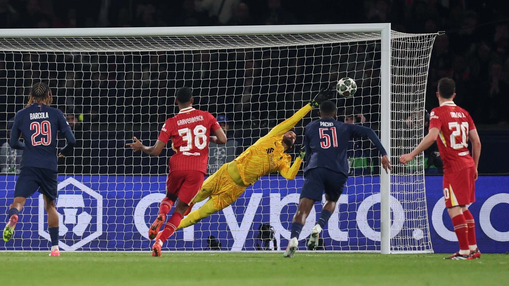
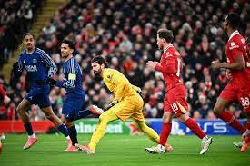
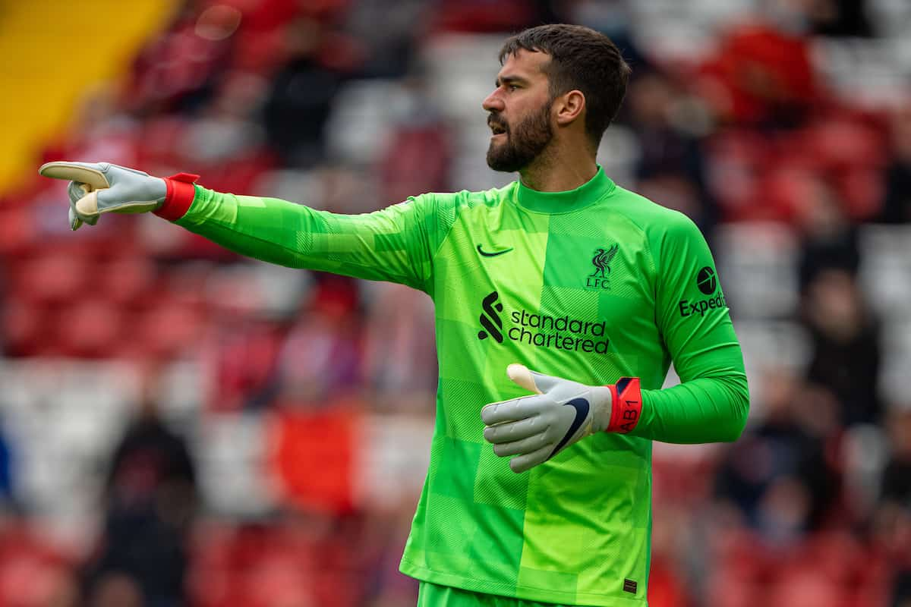
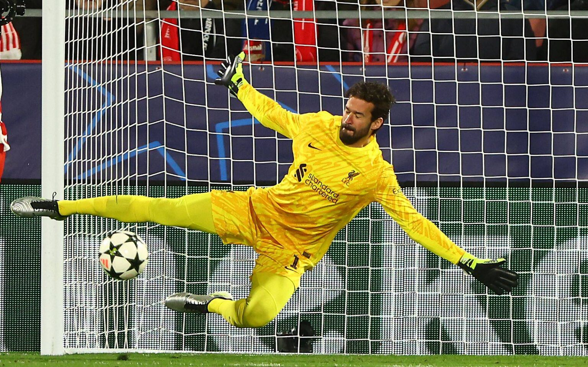
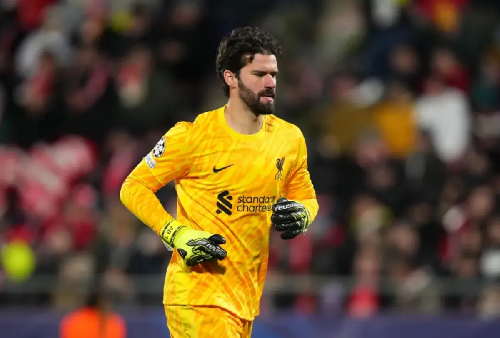
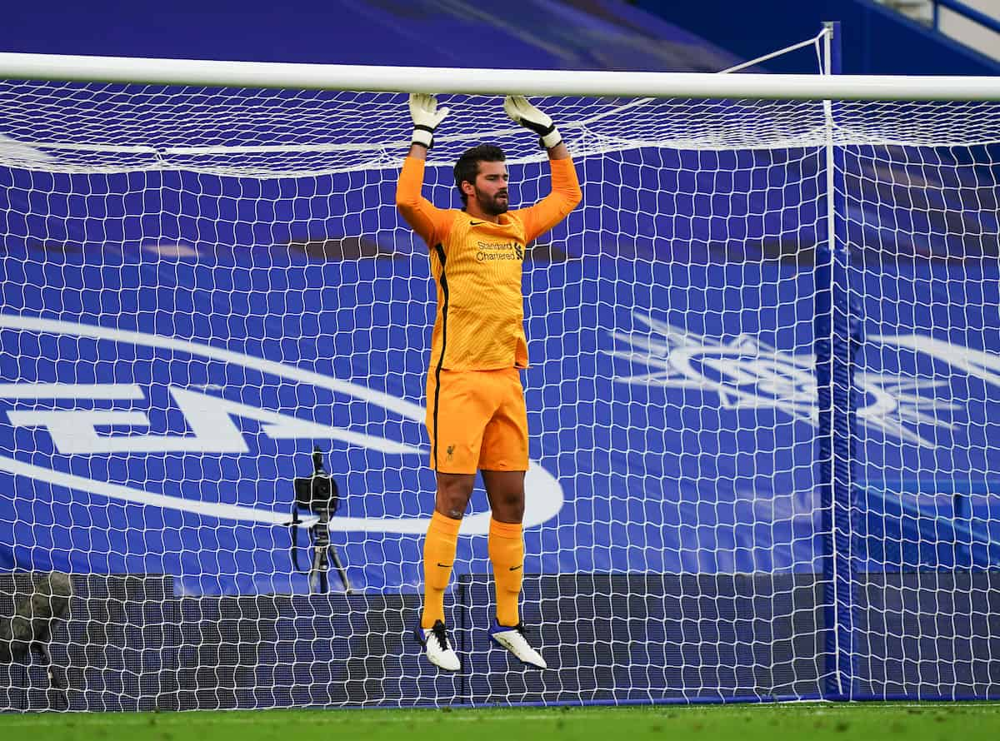

Alisson Becker
ชื่อเต็ม: Alisson Ramses Becker
วันเกิด: 2 ตุลาคม 1992
สัญชาติ: บราซิล
ตำแหน่ง: ผู้รักษาประตู (Goalkeeper)
สโมสรปัจจุบัน: Liverpool FC (อังกฤษ)
🏆 ประวัติและความสำเร็จ
อลิสซอน เบ็คเกอร์ เป็นผู้รักษาประตูทีมชาติบราซิลและลิเวอร์พูล ได้รับการยกย่องว่าเป็นหนึ่งในผู้รักษาประตูที่ดีที่สุดในโลก มีสไตล์การเล่นที่มั่นใจ ใช้เท้าได้ดี และมีส่วนสำคัญในการพาลิเวอร์พูลคว้าแชมป์ยูฟ่าแชมเปียนส์ลีก, พรีเมียร์ลีก, เอฟเอคัพ และฟุตบอลโลกสโมสร
ประวัติการเล่นกับสโมสร
- 2013 - 2016: SC Internacional (บราซิล)
- 2016 - 2018: AS Roma (อิตาลี)
- 2018 - ปัจจุบัน: Liverpool FC (อังกฤษ)
Gallery





